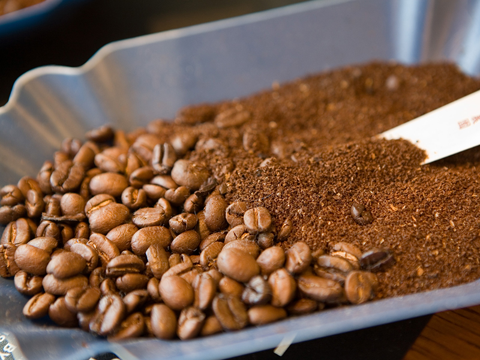

お知らせ
コロナウィルスの対策実施中
■入店のお客様へのアルコール消毒の実施
お客様来店時に際し、入り口で店舗スタッフによるお客様への
アルコール消毒を行ってから店内にご案内としております。
■店舗従業員のアルコール消毒の実施
店舗従業員は30分後とに手洗い消毒かつ料理配膳時のアルコール消毒の徹底を行い、
お料理、ドリンク提供時商品提供時に手の消毒実施。お客様が帰った後、テーブル、椅子、
メニューに関してアルコール消毒の徹底を行っております。
■HPを更新しました（5/20）
当店のコーヒーについて
選び抜かれたコーヒー豆
お客様一人ひとりに本当においしいコーヒーをお届けするためには、抽出の技術だけでなく、
原料の品質からしっかりと考えなければなりません。
コーヒーは豊かで美しい地球の恵みです。
すなわち、地球環境を守ることは、おいしいコーヒーを守ることだと、私たちは考えます。
一杯のおいしいコーヒーのために土を創り、木を育て、豆を選ぶ。当店では、
そんな生産者の想いを大切にしています。
カリブの楽園、ジャマイカのブルーマウンテンコーヒー直営農園、
そしてハワイの農園では研鑚をつんだ
農事技師がコーヒー栽培に最適の環境を整え、苗木から一本一本の木を大切に育てています。
そして現地での厳選なる試験により選び抜かれたものだけが日本に送り届けられます。
日本国内では熟練のクラシフィカドール(コーヒー鑑定士)が生豆の品質をあらゆる角度から
チェックをしています。
厳しいチェックをくぐりぬけたコーヒー豆は徹底した管理のもと、
豆の種類にあわせ1種ずつ丁寧に焙煎され、
独自の急冷方法「アロマフリージング製法」で、コーヒーの香りを豆の中に閉じ込められます。
当店のブレンドはやや深煎りですが、コーヒー豆の持つ甘さを最大限に引き出すベストポイントを
探り当てた、アラビカ種100％の逸品です。
また、レインフォレスト・アライアンス認証コーヒー（※1）
を使用し、いつまでも安心・安全なおいしいコーヒーをお届けしていこうと考えています。
植物を保護することを目的に設立された国際的な非営利環境保護団体であるレインフォレスト・アライアンス
（熱帯雨林同盟）が定める厳しい基準を満たし、認定された農園でのみ生産されたコーヒー。
店舗の様子
店舗情報
- 店名
- Sweet Market
- 住所
- 秋田市山王1-1-1
- TLE
- 018-865-3031
- 営業時間
- 毎日11：00～16時(Lo/15:30)